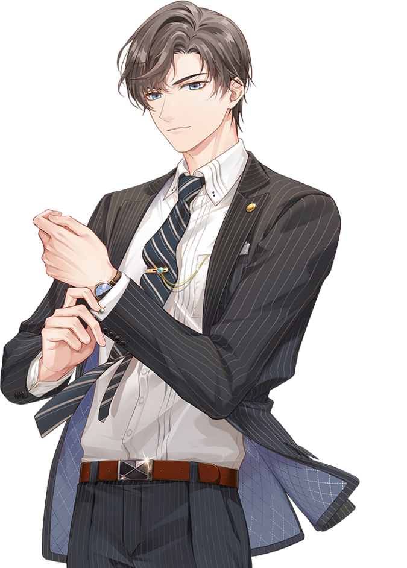

Tears of Themis is a mobile romance detective gacha game developed and published by HoYoverse. The player takes on the role of a female defense lawyer who defends her clients in various criminal cases. The player character, alongside the four male leads, also joins a secret investigation team dedicated to solving the mystery behind the illegal distribution of a dangerous drug known as NXX. In various side stories, the player can also learn more about each of the main heroine's possible suitors through their own personal character stories.
| Photo | Name | Voice Actor | Info | Personality |
| MAIN CHARACTER Name: Player-determined NXX Codename: Rosa |
N/A | A junior lawyer in Themis Law Firm, the second largest law firm in Stellis City, and a graduate of the law department of Stellis University. |
|
|
|  | ARTEM Name: Artem Wing NXX Codename: Libra |
CHS: Zhao Lu CHT: Yin Xiang JP: Suwabe Junichi KR: Jang Minhyuk |
A chief and senior attorney in Themis Law Firm. He obtained his doctorate at the age of 25, and was qualified as a senior attorney at the age of 28 with a win rate of 99%. |
|
| VYN Name: Vyn Richter NXX Codename: Adjudicator |
CHS: Jiang Guangtao CHT: Yu Cheng-Shen JP: Fukuyama Jun KR: Hwang Changyung |
A psychologist, co-owner and chief researcher of Giannovyn Mental Health Research Center, and a visiting professor at the School of Psychology of Stellis University. |
|
|
| LUKE Name: Luke Pearce NXX Codename: Raven |
CHS: Titus Jin CHT: Chen Hung Yu JP: Yuki Kaji KR: Kim Jiyul |
A private detective. Owner of Time's Antiquities, an antique store that serves as a front to Pearce Private Investigations. A graduate of a Master's in Bioengineering. |
|
|
| MARIUS Name: Marius von Hagen NXX Codename: King |
CHS: Yang Tianxiang CHT: Chiang Chih Lun JP: Ishikawa Kaito KR: Han Shin |
The second son of the current head of the von Hagen family, Austin von Hagen, and the executive president of the Pax Group. A graduate of the Florence College of Art. |
|